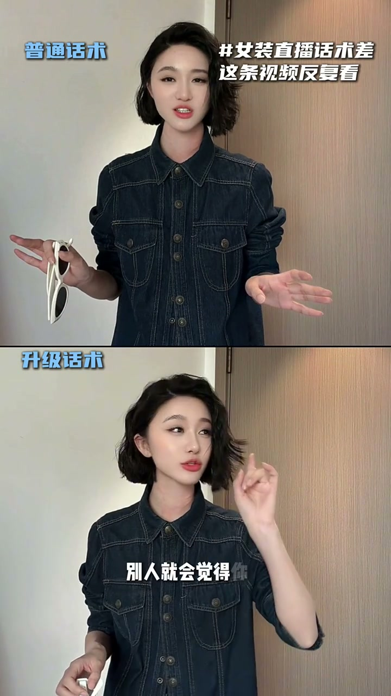

高级感：不露世俗
00:00我是普通话术，我是升级话术——同一条裙子，两种卖法。
00:02不要说“穿上它很高级”，要说“穿上它有一种不露世俗的高级感”——把形容词升级成气质描述。

[00:03] 普通话术 vs 升级话术
Basic scripts vs upgraded scripts

[00:08] 不露世俗的高级感
An understated, un-showy sophistication
稀缺感：你有钱我没货
00:07不要说“再不拍就没了”，要说“整场直播就三十件”。
00:11到时候不是钱不钱的事情，是你有钱我没有货——把催单升级成“怕你买不到”的为你好。
00:15我再强调一遍，如果没有提前付款肯定没有的，先拍带有优惠，要不要理——像犹豫的话，拍的机会都没有。

[00:13] 整场就三十件：是你有钱我没货
Only thirty pieces this run: it's you who has money, not us having stock
白月光：场景造梦
00:20不要说“白色很温柔”，要说“穿上这条白色裙子，就是白月光的感觉”。
00:27而且你不会成为任何人的白月光，你只会成为自己的白月光——把穿衣服变成自我认可。
00:30你穿着白裙子，在海边拍照、草原拍照、森林拍照，阳光撒在你身上，每次回想起来都感觉如此美好——带观众进入画面。

[00:23] 白月光：只做自己的白月光
Moonlight-white: be your own moonlight-white

[00:31] 海边/草原/森林：场景造梦
Seaside / prairie / forest: scenes that dream
风骨感：身份认同
00:42不要说“这个白裙子穿上很酷”，要说“穿上这个白裙子，别人就会觉得你是一个很有风骨的人”。
00:46这是一个不可冒犯的人，以及会对你多几分敬重——卖的是气场。
00:50这个白裙子是很正很正的，男生有行政夹克，女生有这件行政西装，酷毙了。

[00:44] 有风骨、不可冒犯、让人敬重
Has backbone, untouchable, commanding respect
女装直播话术的本质是卖形象不卖衣服——从“穿上很高级”升级到“你变成谁”：不露世俗、有钱没货、自己的白月光、有风骨被敬重。